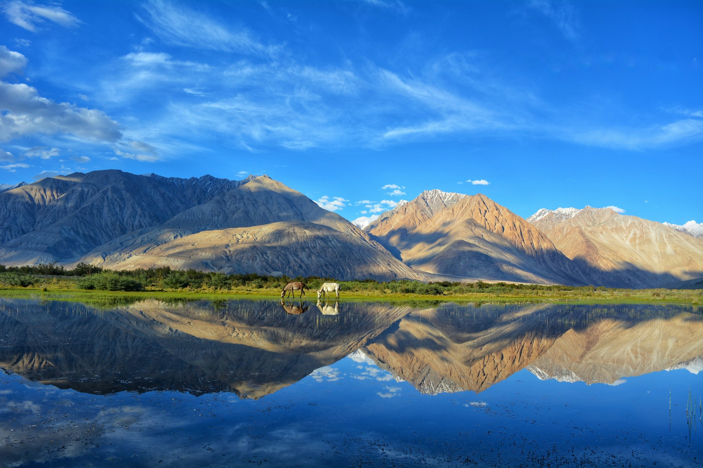
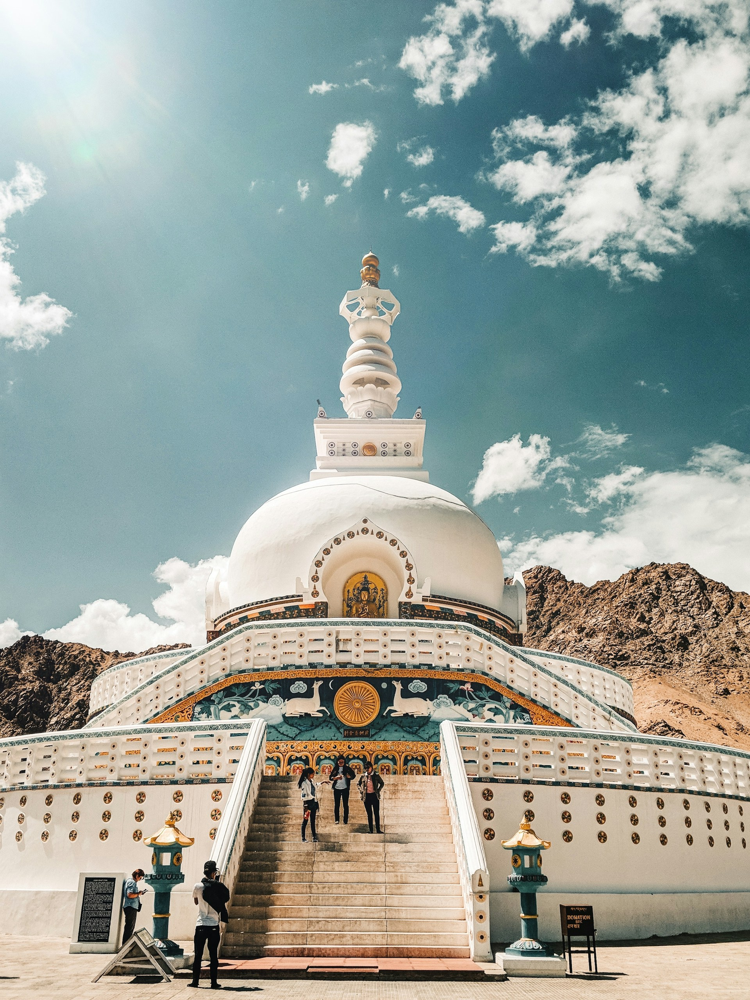
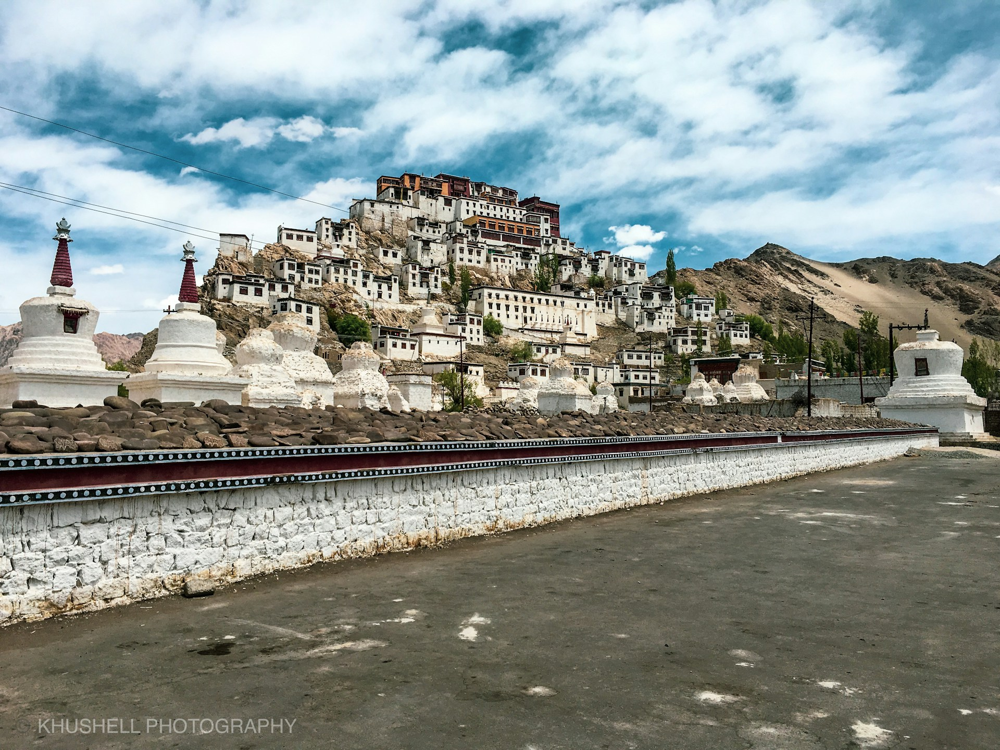
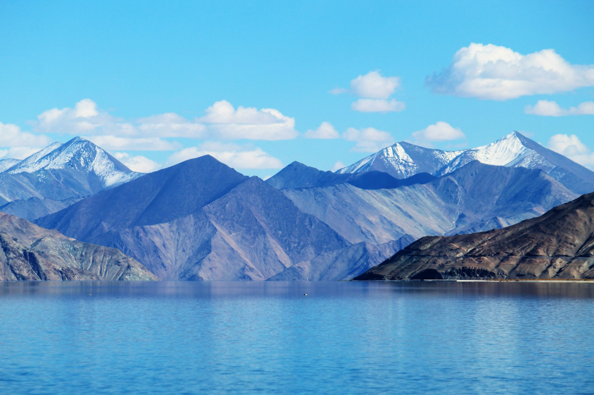

Ladakh, known as the "Land of High Passes," is one of the most breathtaking destinations in India.
Surrounded by the Himalayas and Karakoram ranges, it offers rugged landscapes, monasteries, and unique
Tibetan culture.
Famous spots like Pangong Lake, Nubra Valley, and Magnetic Hill make it a dream destination for adventurers, bikers, and peace seekers alike.
Famous spots like Pangong Lake, Nubra Valley, and Magnetic Hill make it a dream destination for adventurers, bikers, and peace seekers alike.
Location: Union Territory of Ladakh
Coordinates: 34°09′N 77°34′E





Tips for Visit
- Best season: May–September (roads open, clear weather).
- Carry warm clothes, even in summer.
- Keep medicines for high-altitude sickness.
- Mobile networks are limited; BSNL works best.
- Inner Line Permits required for Nubra & Pangong.

Ramesh Kumar
15 yrs guiding in Agra
⭐⭐⭐⭐⭐

mohmd ali
Mughal history specialist
⭐⭐⭐⭐☆

Imran Ali
Speaks English, Hindi, French
⭐⭐⭐⭐⭐

Priya Sharma
Cultural & heritage tours
⭐⭐⭐⭐
Local Services
| NAME | CONTACT |
|---|---|
| Tourist Helpline | +91-1982-252297 |
| Taxi Service | +91-9419123456 |
| Hotel Assistance | +91-1982-252233 |
| Emergency | 100 / 108 |
Nearby Places
| NAME | Location | Highlights |
|---|---|---|
| Pangong Lake | Leh district | Blue high-altitude lake |
| Nubra Valley | Khardung La pass | Sand dunes & monasteries |
| Thiksey Monastery | 19 km from Leh | Buddhist monastery |